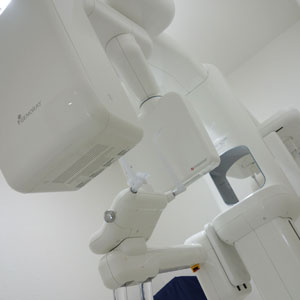
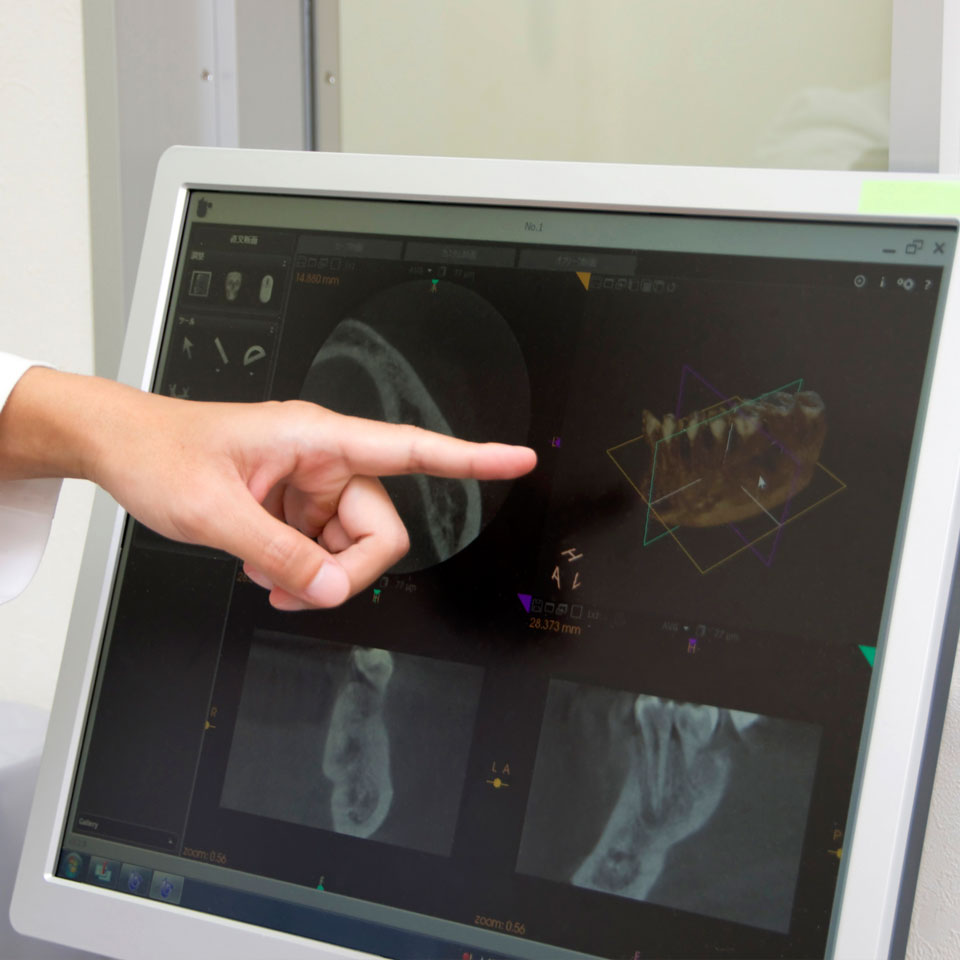
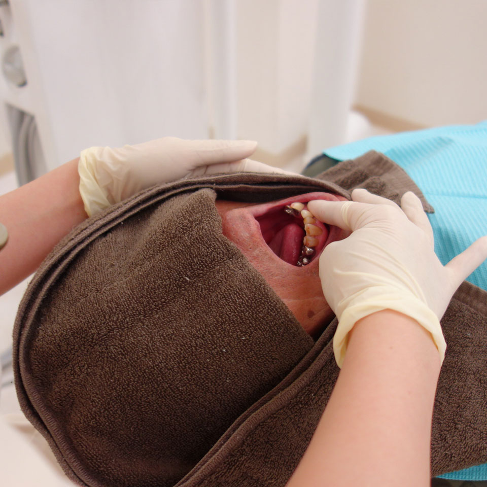
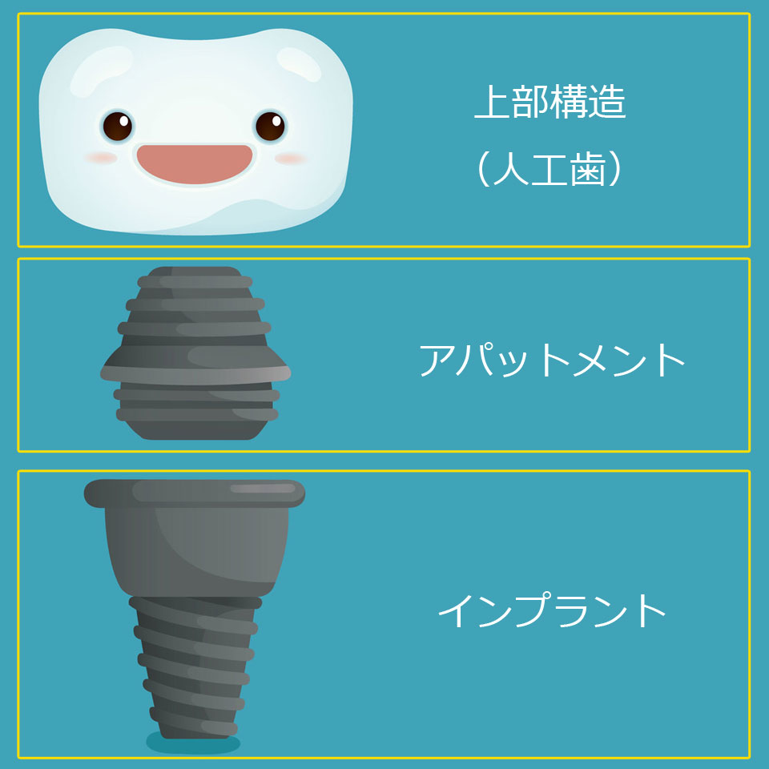
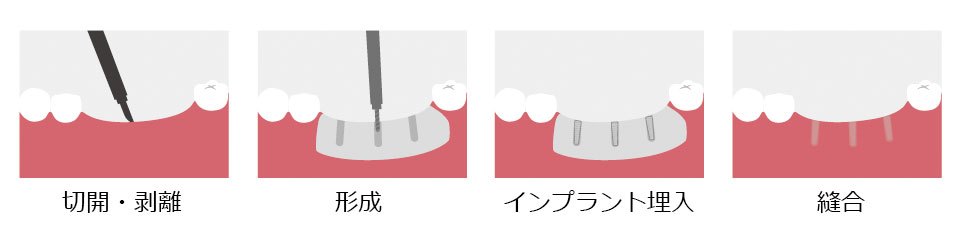
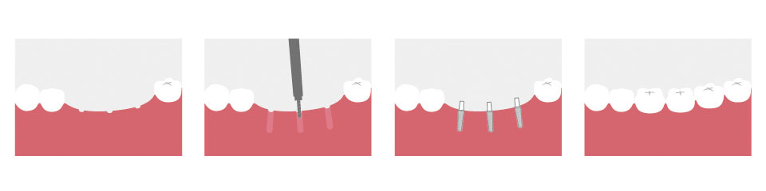
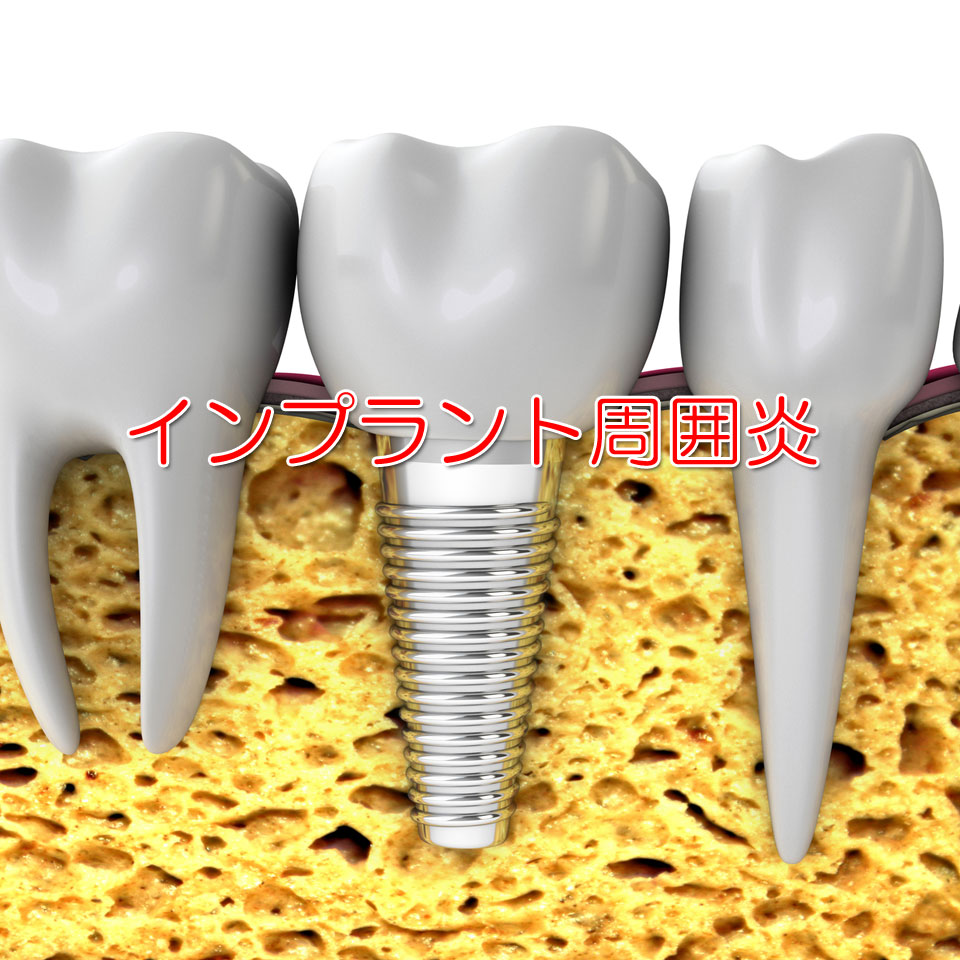

～身体への負担の少ない、低侵襲のインプラント治療を採用しています～
院長の高崎は、九州大学大学院在学中の2000年からインプラント治療に取り組んでいます。
開業当初は、現在でも多くの歯科医院で行われているメスを使い切開する方法でした。術後、患者さんが腫れていたり痛みがでるのを見ていて、これが本当に良い方法なのか？と、疑問を持つようになりました。
2008年サンフランシスコのＤｒ.ラムの研修会に参加し、それまでの考えが一変しました。プロ野球の王さんが、内視鏡手術をして回復が早かった事はご存知の通りです。
やはりインプラント治療でも、内視鏡の様に低侵襲で治療をすれば歯ぐきからの血流が保たれて治りが早いと考え、現在実践しています。
「あっと言う間に終わった」「想像していたほど、痛くなかった！」等、嬉しい言葉をたくさん頂いております。
入れ歯は嫌で自分の歯の様に噛みたいけど、腫れや痛みが怖いという方、ぜひ一度、ご相談ください。
～治療前の検査から、治療後の予防まで安全・安心の診療システムです～
〜どこよりも安全な治療を実現〜
【CTによる解析】
立体的な画像で骨の厚み・神経の位置まで把握し、
安全性を最優先に診断します。

〜最短・最適な治療計画〜
ＮＴインプラントは最短で１本『30分』で埋入が終わります。ＣＴ画像ソフトを使用して、画面上で治療の進行・術式を再現。これにより実際の治療はとても安全、かつ最短で行うことが可能になりました。

〜安心の無料メンテナンス3回つき〜
従来の術後ケアに加えて、術前にもお口の検査・ケアを実施します。また免疫力を高める錠剤や、唾液分泌や血流を促すマウスリンパマッサージをうける事で、より早い術後の回復が望めます。 術後の経過確認、プロの歯科衛生士による３回の無料メインテナンスに加え、インプラントの長持ちに一番大切なご自宅でのケアも、しっかりとご指導いたします。 もちろん、全てＮＴインプラント治療の中に含まれるので、安心です。


インプラントは、この３つのブロックからできています。
インプラントをアゴの骨に固定する為、手術が必要となります。
※上の人工歯の質はいくつか選択できます。
一般的な治療法ではインプラントを骨に固定する為、広範囲に切り開く必要がありました。

低侵襲の手術法では最低限必要な箇所のみ治療しますから、回復が早いのです

～インプラント周囲炎をご存知ですか？～

インプラント治療は、治療後のメインテナンスが欠かせません。 このメインテナンスをしっかりと行わないと、インプラント周囲炎のような症状をはじめとした不具合が出てきます。 当院ではインプラント治療後の最高のメインテナンス体制として「NT会員」という 会員制予防プログラムを整えておりますので安心して、インプラント治療をお受け下さい。